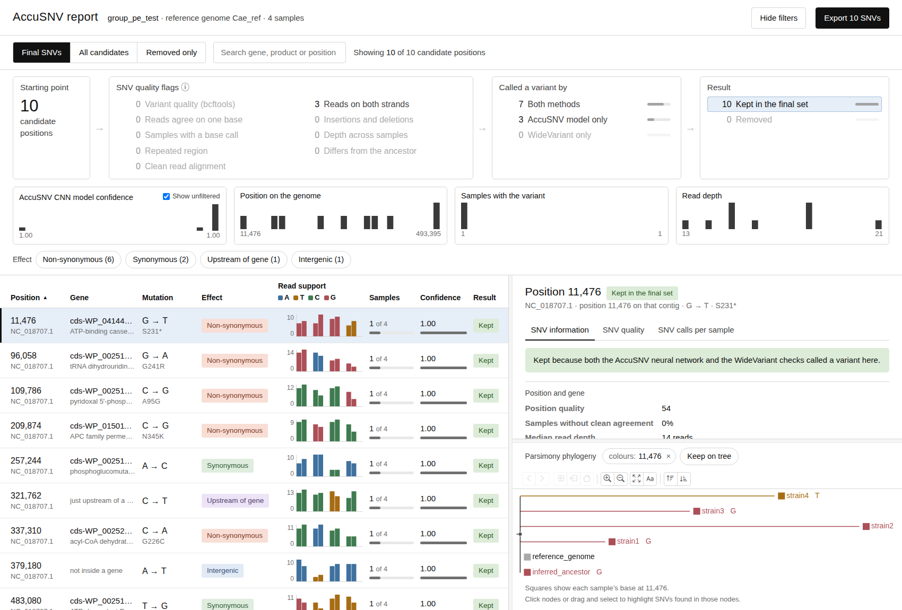

Quick start
This page demonstrates how to quickly test run AccuSNV using the test dataset provided in the repository. Running this test can both demonstrate that your AccuSNV install is working properly, and provide an example reference for how to set up your own test data.
The repository ships with a small test dataset: four Cutibacterium acnes isolates, paired-end reads, mapped against a 500 kb window of the C. acnes C1 genome at 15x depth. It runs every stage of the pipeline in two minutes on eight cores. The same data is also provided as single-end reads.
Download the test data by cloning the GitHub repository:
git clone https://github.com/liaoherui/AccuSNV
cd AccuSNV
Basic run in local mode
accusnv -m local -i Test_data/samples_cae_test_pe.csv -r Test_data/reference_genomes -o test_data_output
-m local runs AccuSNV on the current compute node and in your current working environment. Add -j 8 to use eight cores.
To submit the same run to a Slurm cluster instead:
accusnv -m slurm -sp <partition> -i Test_data/samples_cae_test_pe.csv \
-r Test_data/reference_genomes -o test_data_output
(it is recommended to submit this command itself to a node via sbatch --wrap='[command]').
-sp is used to specify the partitions you would like to submit jobs to. This can be a comma separated list: -sp partition1,partition2. If you do not specify any partitions, slurm will submit jobs to the default partitions your account has access to.
The reference directory has to be writable the first time, because the run builds the bwa and
samtools indexes there. If it is not, build them yourself first with bwa index genome.fasta
and samtools faidx genome.fasta.
Resulting outputs
The run writes a running commentary to test_data_output/accusnv.log. The output is all stored in the output directory specificied with -o, which is ./test_data_output/ in this case.
Output files
Output files in AccuSNV are created per user-defined group (see the inputs page. In this test, there is 1 user defined group. You can read more details on the outputs you get from AccuSNV on the Output files page. However, the most important ones are:
File |
Description |
|---|---|
|
SNV calls, one row per position, with gene and protein annotation. This is the main result. |
|
An interactive web page for examining SNVs and showing them on an interactive tree. |
|
A table that also includes sites that were considered, but rejected, as potential SNVs. |
|
A maximum-parsimony tree of the isolates in Newick format. |
|
Genome-wide and per-gene dN/dS calculations. |
|
Per-sample distance to the inferred common ancestor (dMRCA). |
Intermediate files are also available in these directories:
<outdir>/1-Mapping/ - contains trimmed reads, mapped BAMs, VCFs, and pileups.
<outdir>/2-SNV-filtering/ - contains raw coverage matrices, pileups, and unfiltered SNV tables.
<outdir>/3-Analysis/ - contains diagnostic quality figures, phylogeny raw files, and dN/dS calculations.
The two test datasets should give you:
paired end |
single end |
|
|---|---|---|
Samples |
4 |
4 |
Median depth |
14x |
15x |
SNVs in the final table |
10 |
13 |
Nonsynonymous / synonymous |
6 / 2 |
8 / 5 |
dN/dS |
0.9624 (95% CI 0.1721 to 9.7500) |
0.5133 (95% CI 0.1481 to 1.9941) |
The dN/dS confidence intervals are wide because there are so few mutations. That is expected at this dataset size.
The interactive report
For each group of samples, you’ll receive a group_pe_test_snv_dashboard.html file. This interactive HTML file helps you visualize SNV quality, SNV occurrences on the tree, and explains why candidate SNVs were included or eliminated.
{kind=link}

The report for the paired-end test dataset.
The interactive report page explains how to use this interactive dashboard in more detail.
The final SNV table
The primary output of AccuSNV is the final SNV table. Each SNV is a row in this table, and the table retains all information about the genome position, contig, gene, impact on the gene, and sample genotypes of that SNV.
The final SNV table page explains all of the columns in this file.
Next steps
Learn more about setting up your input files for AccuSNV
Learn more about running AccuSNV